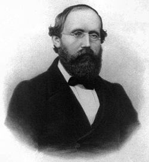

Tout comme nous avons réussi à donner une interprétation graphique à la fonction dérivée (pente de la tangente), nous cherchons ici à donner une interprétation graphique à la notion de primitive. Cela ne peut se faire de façon satisfaisante qu'au moyen de la notion de 'surface' ou "d'aire" d'une partie du plan. Cela pose d'entrée certains problèmes théoriques du type: "Quelles sont les parties du plan, susceptibles de se voir attribuer une aire? La croyance 'naïve' que toute partie est 'mesurable' se heurte très vite à des difficultés théoriques qui ne sont pas forcément liées à la notion de dimension. On rencontre les mêmes problèmes avec la longueur des courbes et la mesure des volumes dans l'espace. Ces problèmes sont aujourd'hui à peu près résolus, mais il n'y a pas une approche unique de la théorie de la mesure.
Galerie des portraits
Nous suivrons ici les traces de Bernhard Riemann qui a poursuivi le travail de Cauchy dans cette direction et dont la pensée se résume simplement
Motivation
Just as we succeeded in giving a graphical interpretation to the derivative function (slope of the tangent), we seek here to give a graphical interpretation to the notion of primitive. This can only be done satisfactorily by means of the notion of 'surface' or "area" of a subset of the plan. This immediately poses certain theoretical problems such as: "What are the parts of the plane, likely to be assigned an area ? The 'naive' belief that any part is 'measurable' very quickly comes up against theoretical difficulties which are not necessarily linked to the notion of dimension. We encounter the same problems with the length of curves and the measurement of volumes in space. These problems are now more or less solved, but there is no single approach to measure theory.
Portrait gallery
We will follow here in the footsteps of Bernhard Riemann who continued Cauchy's work in this direction and whose thought can be summed up simply
Bernhard Riemann (1826/1866-DE)

Mesure des surfaces au sens de Riemann
Il est logique de prendre comme 'briques de base' les rectangles. Les rectangles sont mesurables et ont une aire égale au produit de leur longueur par leur largeur. Cela dit, une fonction de mesure, si on veut qu'elle se comporte comme on est en droit de l'attendre, doit posséder la propriété "d'additivité" (finie), c'est à dire que la mesure de la réunion disjointe de deux parties mesurables doit être mesurable et avoir pour mesure la somme des mesures de chacun d'eux. Il est donc logique d'accepter comme mesurables les 'sommes de rectangles' (réunions finies de rectangles disjoints) et d'associer à de tels ensembles une mesure qui sera la somme des mesures des rectangles constituants. Pour finir, on qualifiera un ensemble de 'mesurable' si pour tout réel ε >0, on peut le "coincer" entre deux sommes de rectangles, la première contenue dans lui et la seconde le contenant et telles que la différence de leurs mesures est ≤ ε. On voit que dans ces conditions que si S est un ensemble ainsi défini, les sommes de rectangles incluses dans S ont une borne supérieure, les sommes de rectangles contenant S ont une borne inférieure et les deux bornes sont égales. C'est justement cette valeur commune que nous appelerons l'aire de S. Voici maintenant une appliquette qui encadre la surface d'une ellipse de grand axe 4 et de petit axe 2 (surface théorique=2π≈6.28) au moyen de recouvrements par des sommes de carrés de côté 1/2n pour n variant entre 1 et 5. Cliquer sur le bouton '+' pour augmenter la valeur de n jusqu'à 5. Cliquer sur le bouton '-' pour diminuer la valeur de n jusqu'à 1. S1 est une approximation par défaut (surface grise). S2 est une approximation par excès (surface bleue). Notons que la moyenne des deux n'est pas très éloignée de la valeur théorique qui vaut 2π. Un délai peut être demandé pour la valeur 5 de n.
Measurement of areas in the sense of Riemann
It is logical to take rectangles as 'base bricks'. Rectangles are measurable and have an area equal to the product of their length by their width. That said, a measurement function, if we want it to behave as we are entitled to expect, must possess the property "additivity" ( finite), that is to say that the measure of the disjoint union of two measurable parts must be measurable and have as measure the sum of the measures of each of them. It is therefore logical to accept as measurable the < b>
'sums of rectangles'
(finite reunions of disjoint rectangles) and to associate to such sets a measure which will be the sum of the measures of the constituent rectangles. Finally, we will qualify a set as 'measurable' if for all real ε >0, it can be "stuck" between two sums of rectangles, the first contained in it and the second containing it and such that the difference of their measures is ≤ ε. We see that under these conditions that if S is a set thus defined, the sums of rectangles included in S have an upper bound, the sums of rectangles containing S have a lower bound and the two bounds are equal. It is precisely this common value that we will call the area of S. Here is now an applet which frames the surface of an ellipse with major axis 4 and minor axis 2 (theoretical surface=2π≈6.28) by means of coverings by sums of squares of side 1/2n for n varying between 1 and 5. Click on the '+' button to increase the value of n up to 5. Click on the '-' button to decrease the value of n down to 1. S1 is a default approximation (grey surface). S2 is an excess approximation (blue area). Note that the average of the two is not very far from the theoretical value which is equal to 2π. A waiting time can be asked for value 5 of n.
Voici un programme Python qui calcule des approximations par défaut et par excès de la surface de la même ellipse, par la même méthode.
Here is a Python program that computes default and excess approximations of the area of the same ellipse, by the same method.
Tout comme, dans le cadre des , nous avons défini l'épigraphe d'une fonction, nous posons la définition suivante:
Hypograph of a positive function
Just like, in the context of , we have defined the epigraph of a function, we pose the following definition:
définition 1
On désigne par 'hypographe' de f (f est supposée positive) l'ensemble des points (x,y) définis par x ∈ D (domaine de f) et 0 ≤ y ≤ f(x).
definition 1
We denote by 'hypograph or subgraph' of f (f is assumed to be positive) the set of points (x,y) defined by x ∈ D (domain of f) and 0 ≤ y ≤ f(x)
Vous pouvez, avec l'appliquette ci-dessous, visualiser quelques hypographes. Appuyer sur le bouton 'choix fonction' pour changer de fonction.
You can, with the applet below, visualize some hypographs. Press the 'choose function' button to change function.
Calculs 'directs' de certaines aires d'hypographes de fonctions continues positives.
Voici un exemple de calcul direct d'une mesure d'aire d'hypographe de la fonction f(x)=xs (s entier >=0) entre 0 et 1. Faire varier les valeurs de s avec le curseur et n avec les boutons.
'Direct' calculations of certain areas of hypographs of positive continuous functions.
Here is an example of a direct calculation of a hypograph area measure of the function f(x)=xs (integer s >=0) between 0 and 1. Vary the values of s with the slider and n with the buttons.
La méthode consiste à construire une suite x0=1/n, x1=r/n, x2,..., xn =1 avec xk=x0rk où r = n1/n Posons I(n,s) la mesure de la somme des rectangles telle qu'elle apparaît sur l'appliquette.
The method consists in constructing a sequence x0=1/n, x1=r/n, x2,..., xn =1 with xk=x0rk where r = n1/n Let I(n,s) be the measure of the sum of the rectangles as it appears on the applet.
Nous revenons maintenant à notre point de départ, à notre motivation. Le résultat essentiel que nous allons établir dans ce chapitre est le suivant:
Fundamental result
Now we come back to our starting point, our motivation. The essential result that we will establish in this chapter is the following:
théorème 1
Si f est une fonction continue positive sur un intervalle [a,b] et si pour tout x ∈ [a,b], nous posons F(x)= l'aire de l'hypographe de f entre les points d'abscisses a et x, alors F est une primitive de f sur [a,b]. plus précisément F est la primitive de f qui s'annule en a.
theorem 1
If f is a positive continuous function on an interval [a,b] and if for all x ∈ [a,b], we set F(x)= the area of the hypograph of f between the abscissa points a and x, then F is a primitive function of f on [a,b]. more precisely F is the antiderivative of f which vanishes at a.
Nous traiterons ensuite le cas des fonctions non partout positives pour une généralisation de ce résultat. Voici maintenant une appliquette qui vous permet de visualiser graphiquement certaines primitives. Vous pouvez changer de fonction avec le bouton 'Autre exemple'. Vous pouvez faire varier x entre 0 et 5 avec la souris en tirant le point rouge .
We will then deal with the case of non-everywhere positive functions for a generalization of this result. Here is now an applet that allows you to visualize certain primitive functions graphically. You can change the function with the 'Other example' button. You can vary x between 0 and 5 with the mouse by dragging the red point.